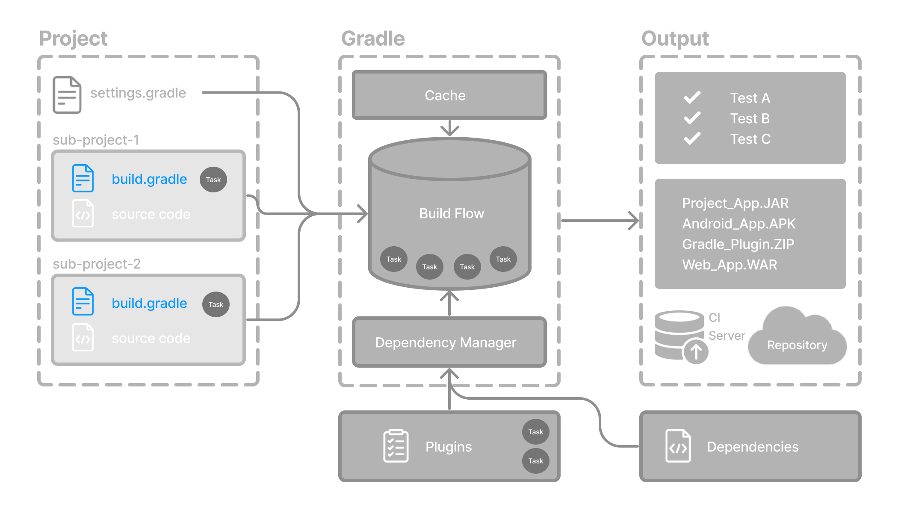

Generally, a build script (build.gradle(.kts)) details build configuration, tasks, and plugins.

Every Gradle build comprises at least one build script.
Build scripts
The build script is either a build.gradle file written in Groovy or a build.gradle.kts file in Kotlin.
The Groovy DSL and the Kotlin DSL are the only accepted languages for Gradle scripts.
In multi-project builds, each subproject typically has its own build file located in its root directory.
Inside a build script, you’ll typically specify:
Plugins: Tools that extend Gradle’s functionality for tasks like compiling code, running tests, or packaging artifacts.
Dependencies: External libraries and tools your project uses.
Specifically, build scripts contain two main types of dependencies:
Gradle and Build Script Dependencies: These include plugins and libraries required by Gradle itself or the build script logic.
Project Dependencies: Libraries required directly by your project’s source code to compile and run correctly.
Let’s take a look at an example and break it down:
plugins { (1)
// Apply the application plugin to add support for building a CLI application in Java.
application
}
dependencies { (2)
// Use JUnit Jupiter for testing.
testImplementation(libs.junit.jupiter)
testRuntimeOnly("org.junit.platform:junit-platform-launcher")
// This dependency is used by the application.
implementation(libs.guava)
}
application { (3)
// Define the main class for the application.
mainClass = "org.example.App"
}plugins { (1)
// Apply the application plugin to add support for building a CLI application in Java.
id 'application'
}
dependencies { (2)
// Use JUnit Jupiter for testing.
testImplementation libs.junit.jupiter
testRuntimeOnly 'org.junit.platform:junit-platform-launcher'
// This dependency is used by the application.
implementation libs.guava
}
application { (3)
// Define the main class for the application.
mainClass = 'org.example.App'
}| 1 | Add plugins. |
| 2 | Add dependencies. |
| 3 | Use convention properties. |
1. Add plugins
Plugins extend Gradle’s functionality and can contribute tasks to a project.
Adding a plugin to a build is called applying a plugin and makes additional functionality available.
plugins { (1)
// Apply the application plugin to add support for building a CLI application in Java.
application
}plugins { (1)
// Apply the application plugin to add support for building a CLI application in Java.
id 'application'
}The application plugin facilitates creating an executable JVM application.
Applying the Application plugin also implicitly applies the Java plugin.
The java plugin adds Java compilation along with testing and bundling capabilities to a project.
2. Add dependencies
Your project needs external libraries to compile, run, and test.
In this example, the project uses JUnit Jupiter for testing and Google’s Guava library in the main application code:
dependencies { (2)
// Use JUnit Jupiter for testing.
testImplementation(libs.junit.jupiter)
testRuntimeOnly("org.junit.platform:junit-platform-launcher")
// This dependency is used by the application.
implementation(libs.guava)
}dependencies { (2)
// Use JUnit Jupiter for testing.
testImplementation libs.junit.jupiter
testRuntimeOnly 'org.junit.platform:junit-platform-launcher'
// This dependency is used by the application.
implementation libs.guava
}3. Use convention properties
A plugin adds tasks to a project. It also adds properties and methods to a project.
The application plugin defines tasks that package and distribute an application, such as the run task.
The Application plugin provides a way to declare the main class of a Java application, which is required to execute the code.
application { (3)
// Define the main class for the application.
mainClass = "org.example.App"
}application { (3)
// Define the main class for the application.
mainClass = 'org.example.App'
}In this example, the main class (i.e., the point where the program’s execution begins) is org.example.App.
Build scripts are evaluated during the configuration phase of a build, and they serve as the main entry point for defining a (sub)project’s build logic. In addition to applying plugins and setting convention properties, build scripts can:
Declare dependencies
Configure tasks
Reference shared settings (from version catalogs or convention plugins)
Next Step: Learn about Dependency Management >>